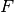
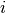
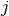
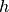
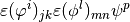

Compute arbitrary terms - low-level generic assembly procedures¶
This section present the first version of generic assembly procedure which has been implemented in GetFEM++. It allows to easily make the assembly of arbitrary matrices in the linear case. In the nonlinear case, some special “non_linear_term” object have to be implemented, which could be a bit tricky and obliges to use very low-level internal tools of GetFEM++. The high-level generic assembly has been developped to circumvent these difficulties (see Compute arbitrary terms - high-level generic assembly procedures).
As it can be seen in the file getfem/getfem_assembling.h, all the previous assembly procedures use a getfem::generic_assembly object and provide it an adequate description of what must be done. For example, the assembly of a volumic source term for a scalar FEM is done with the following excerpt of code:
getfem::generic_assembly assem;
assem.push_im(mim);
assem.push_mf(mf);
assem.push_mf(mfdata);
assem.push_data(F);
assem.push_vec(B);
assem.set("Z=data(#2);"
"V(#1)+=comp(Base(#1).Base(#2))(:,j).Z(j);");
assem.assembly();
The first instructions declare the object, and set the data that it will use: a mesh_im object which holds the integration methods, two mesh_fem objects, the input data F, and the destination vector B.
The input data is the vector , defined on mfdata. One wants to evaluate . The instruction must be seen as something that will be executed for each convex cv of the mesh. The terms #1 and #2 refer to the first mesh_fem and the second one (i.e. mf and mfdata). The instruction Z=data(#2); means that for each convex, the “tensor” Z will receive the values of the first data argument provided with push_data, at indexes corresponding to the degrees of freedom attached to the convex of the second (#2) mesh_fem (here, Z = F[mfdata.ind_dof_of_element(cv)].
The part V(#1)+=... means that the result of the next expression will be accumulated into the output vector (provided with push_vec). Here again, #1 means that we will write the result at indexes corresponding to the degrees of freedom of the current convex with respect to the first (#1) mesh_fem.
The right hand side comp(Base(#1).Base(#2))(:,j).Z(j) contains two operations. The first one is a computation of a tensor on the convex: comp(Base(#1).Base(#2)) is evaluated as a 2-dimensions tensor, , for all degrees of freedom  of mf and  of mfdata attached to the current convex. The next part is a reduction operation, C(:,j).Z(j): each named index (here ) is summed, i.e. the result is .
The integration method used inside comp(Base(#1).Base(#2)) is taken from mim. If you need to use integration methods from another mesh_im object, you can specify it as the first argument of comp, for example comp(\%2, Base(#1).Grad(#2)) will use the second mesh_im object (New in getfem++-2.0).
An other example is the assembly of the stiffness matrix for a vector Laplacian:
getfem::generic_assembly assem;
assem.push_im(mim);
assem.push_mf(mf);
assem.push_mf(mfdata);
assem.push_data(A);
assem.push_mat(SM);
assem.set("a=data$1(#2);"
"M$1(#1,#1)+=sym(comp(vGrad(#1).vGrad(#1).Base(#2))(:,j,k,:,j,k,p).a(p))");
assem.assembly();
Now the output is written in a sparse matrix, inserted with assem.push_mat(SM). The $1 in M$1(#1,#1) just indicates that we refer to the first matrix “pushed” (it is optional, but if the assembly builds two matrices, the second one must be referred this way). The sym function ensure that the result is symmetric (if this is not done, some round-off errors may cancel the symmetricity, and the assembly will be a little bit slower). Next, the comp part evaluates a 7D tensor,
where is a component of the  base
function of mf and is a (scalar) base function of the second
mesh_fem. Since we want to assemble
base
function of mf and is a (scalar) base function of the second
mesh_fem. Since we want to assemble
the reduction is:
In the comp function, vGrad was used instead of Grad since we said that we were assembling a vector Laplacian: that is why each vGrad part has three dimensions (dof number, component number, and derivative number). For a scalar Laplacian, we could have used comp(Grad(#1).Grad(#1).Base(#2))(:,k,:,k,p).a(p). But the vector form has the advantage to work in both vector and scalar case.
The last instruction, assem.assembly(), does evaluate the expression on each convex. For an assembly over a boundary just call assem.assembly(rg), where rg is a getfem::mesh_region object. rg might also be a number, in that case the mesh region taken into account is mim.linked_mesh().region(rg).
The third example shows how to compute the  norm of a scalar or vector
field on a mesh boundary:
norm of a scalar or vector
field on a mesh boundary:
assem.push_im(mim);
assem.push_mf(mf);
assem.push_data(U);
std::vector<scalar_type> v(1);
assem.push_vec(v);
assem.set("u=data(#1);"
"V()+=u(i).u(j).comp(vBase(#1).vBase(#1))(i,k,j,k)");
assem.assembly(boundary_number);
This one is easy to read. When assembly returns, v[0] will contain
The fourth and last example shows an (sub-optimal) assembly of the linear elasticity problem with a complete Hooke tensor:
assem.set("h=data$1(qdim(#1),qdim(#1),qdim(#1),qdim(#1),#2);"
"t=comp(vGrad(#1).vGrad(#1).Base(#2));"
"e=(t{:,2,3,:,5,6,:}+t{:,3,2,:,5,6,:}+t{:,2,3,:,6,5,:}+t{:,3,2,:,6,5,:})/4;"
"M(#1,#1)+= sym(e(:,j,k,:,m,n,p).h(j,k,m,n,p))");
The original equations are:
where  is the Hooke tensor, and means the scalar product between matrices. Since we assume it is not constant, is given on the second mesh_fem: . Hence the first line declares that the first data “pushed” is indeed a five-dimensions tensor, the first fourth ones being all equal to the target dimension of the first mesh_fem, and the last one being equal to the number of degrees of freedom of the second mesh_fem. The comp part still computes the same 7D tensor than for the vector Laplacian case. From this tensor, one evaluates  via permutations, and finally the expression is reduced against the hook tensor.
available operations inside the comp command¶
- Base(#i): evaluate the value of the base functions of the ith mesh_fem
- Grad(#i): evaluate the value of the gradient of the base functions of the ith mesh_fem
- Hess(#i): evaluate the value of the Hessian of the base functions of the ith mesh_fem
- Normal(): evaluate the unit normal (should not be used for volumic integrations !)
- NonLin$x(#mf1,... #mfn): evaluate the xth non-linear term (inserted with push_nonlinear_term(pnonlinear_elem_term)) using the listed mesh_fem objects.
- GradGT(), GradGTInv(): evaluate the gradient (and its inverse) of the geometric transformation of the current convex.
ノート
you may reference any data object inside the comp command, and perform reductions inside the comp(). This feature is mostly interesting for speeding up assembly of nonlinear terms (see the file getfem/getfem_nonlinear_elasticity.h for an example of use).
others operations¶
Slices may be mixed with reduction operations t(:,4,i,i) takes a slice at index 4 of the second dimension, and reduces the diagonal of dimension 3 and 4. Please note that index numbers for slices start at 1 and not 0 !!
mdim(#2) is evaluated as the mesh dimension associated to the second mesh_fem, while qdim(#2) is the target dimension of the mesh_fem.
The diagonal of a tensor can be obtained with t{:,:,3,3} (which is strictly equivalent to t{1,2,3,3}: the colon is just here to improve the readability). This is the same operator than for permutation operations. Note that t{:,:,1,1} or t{:,:,4,4} are not valid operations.
The print command can be used to see the tensor: "print comp(Base(#1));" will print the integrals of the base functions for each convex.
If there is more than one data array, output array or output sparse matrix, one can use data$2, data$3, ``V$2, M$2,...

目次
前のトピックへ
Compute arbitrary terms - high-level generic assembly procedures
次のトピックへ
Some Standard assembly procedures (low-level generic assembly)
Download
Main documentations
- GetFEM++ User documentation
- Python Interface
- Matlab Interface
- Scilab Interface
- Gmm++
- GetFEM++ project